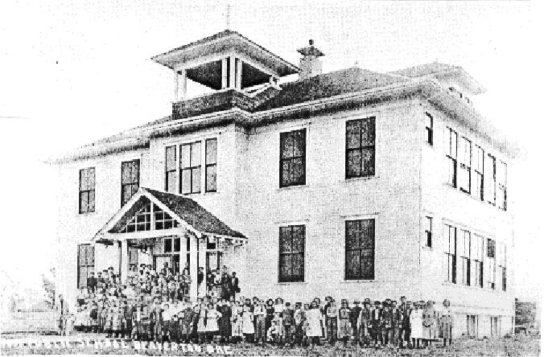

BHS History
The location for the first schoolhouse in Beaverton, Oregon was a 40,000 square foot parcel of land (200’ x 200’) purchased for $50 in gold coins from James and Mary Steel. The land was located between Canyon Road and Broadway Street, south of where Beaverton Transit Center is today. According to the Washington Independent newspaper, the schoolhouse was called Beaverton Public School when it opened in 1875, and consisted of a single classroom. By 1885, two additional rooms were added. Alas, neither was a bathroom.
Beaverton Public School was surrounded by a six-foot fence that had the dual purpose of keeping the students from trespassing on nearby property owners and keeping nearby livestock from wandering onto the school grounds. In 1902, Beaverton Public School began offering ninth-grade-level classes, with 10th grade added in 1910, 11th grade in 1915 and finally a 12th-grade curriculum in 1916 when the new Beaverton High School building opened in 1916.
In 1910, voters authorized the school board to purchase land from the Meier & Frank Co. for $1,500 to build a four-room, two story schoolhouse. Beaverton Grade School was completed in December 1910; classes convened on January 3, 1911 but running water wasn’t connected to the building until February 1914. The land was south of Second Street between Stott and Erickson, where Beaverton High School would be built a few years later.
In 1915, the School Board asked voters to approve a $21,000 bond issue to construct a 21-room high school building, even though there were only 21 students currently attending Beaverton Public School. Voters approved the measure, apparently swayed by the argument that a shining new school would attract more students. The argument turned out to be correct…enrollment doubled in 1915 in anticipation of the new building, severely overcrowding the existing schoolhouse.
On June 8, 1916, Beaverton High School was dedicated to huge fanfare, as described by the Beaverton Times on June 22: “Never in the history of Beaverton has so large a crowd gathered to dedicate a public enterprise and through the entire assembly there seemed to run the feeling of pride and the enthusiasm of progress.” Construction costs were reported to be $20,778; two teachers taught all four grades: C.W. Burtt, teacher and principal, and Ruth E. Johnston, teach and assistant principal.
Beaverton Grade School once again became just a grade school upon completion of Beaverton High School in 1916. By the late 1920s, both schools were filled to capacity, prompting an election in July 1929 to approve $30,000 in bonds to expand the high school, which was dedicated in December of that year. The grade school, however, was not upgraded; by the mid 1930s it had become a fire hazard.
The site for a new grade school, located just east of Beaverton High School, was purchased in 1936 and dedicated on November 22, 1938. Originally called Beaverton Grade School, like the schoolhouse it replaced that was subsequently razed, the building would be renamed Merle Davies School in 1948 to honor a longtime teacher and principal. As the grade school population grew, the school board persuaded voters to approve additional funds that added five classrooms and a cafeteria to the school. Starting in 1983, the Merle Davies building became a classroom annex to Beaverton High School.